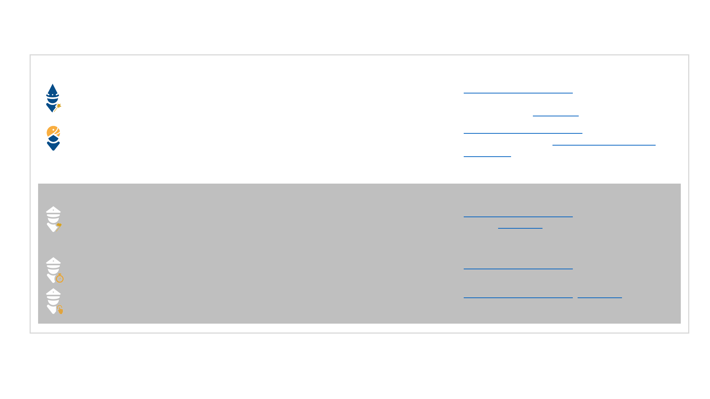

DataHubs only
Power BI Characters
PBI Advanced Training Track, more than 3 months
of experience, PG Power BI Wizard Certification
(you can find it in MyLearning)
PBI Certification Training Track, more than 6
months of experience, Official Microsoft Power BI
Certification
PBI Advanced Training Track, DAX awareness
training, UX Training, Metrics and Diagnostics
Report Ownership
PBI Advanced Training Track, DAX awareness
training, Metrics and Diagnostics Report Ownership
PBI Advanced Training Track, UX Training
Requirements
Wizard – practitioner, who can build medium/advanced reports for a wide user audience, has
basic/medium DAX knowledge, understands UX requirements and can effectively implement them.
It is recommended for Analysts/Data Scientists
Guru – expert, who can build advanced reports for a wide user audience, has medium/advanced
DAX knowledge, understands UX requirements and can effectively implement them, has additional
knowledge on advanced topics (administration, PowerShell etc.). It is recommended for the most
experienced users
DataHub Captain – expert, who can build advanced reports for a wide user audience, has medium/
advanced DAX knowledge, understands UX requirements and can effectively implement them, has
additional knowledge on advanced topics (administration, PowerShell etc.). It is recommended for
the most experienced users
DataHub Performance Captain – governs standard reports, ensures DAX/UX best practices and
monitors performance and usage. It is recommended for Operations and Delivery teams
DataHub UX Captain – governs standard reports and ensures UX best practices. It is recommended
for Delivery teams